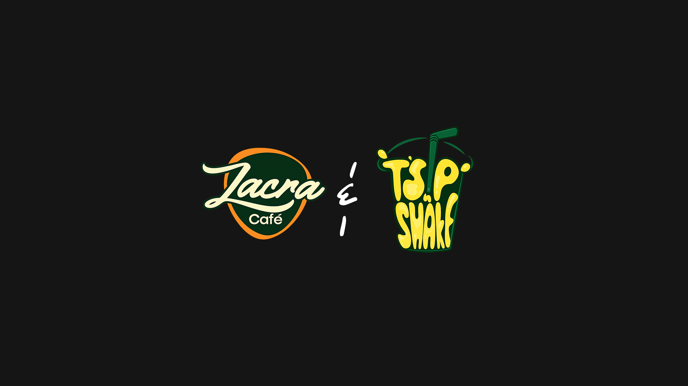

Zacra X Tsip n shake
Two food brands. Two different worlds. One consistent obsession with making things look as good as they taste. Tsip N Shake and Zacra Cafe are two distinct beverage brands, each with their own identity, audience, and energy. For Tsip N Shake I built the brand from the ground up — identity, logo animation, and motion graphics. For Zacra Cafe I came in on the motion side, creating graphics to showcase their drinks and menu. Two briefs, two creative directions, both built around the same principle: food and drink brands live and die on how they look.

Context
Food and drink brands face a specific creative challenge: the product is physical, sensory, and immediate — but most of the work of attracting customers happens on a screen, in a feed, in a moment of scrolling. The gap between what a drink tastes like and what it looks like on an Instagram story is where brand design earns its place.
These two projects came from that exact space. Different briefs, different scopes, different aesthetics — but the same underlying challenge of making something consumable feel irresistible before anyone has had a sip.
BRAND 01 • BRANDING • MOTION GRAPHICS
Tsip N Shake
Tea, Smoothies & Shakes Cafe
Tsip N Shake is a tea, smoothie, and shakes cafe built for a generation that wants their drinks to look as good as they taste. I built the brand identity from scratch — visual system, logo, logo animation, and motion graphics — giving the brand a personality as vibrant and layered as its menu.
The Intro
Tsip N Shake came in at the beginning: no brand, no colours, no visual identity. Just a name, a menu concept, and an audience in mind. The brief was a full brand build: take a cafe from zero to a complete, deployable visual identity with enough motion work to launch confidently into social media.
The name already had personality — Tsip N Shake is playful, rhythmic, and immediately communicates what the brand is about. The design work had to match that energy without overcomplicating it.
The Challenge
The beverage cafe space is saturated, especially on social media. Smoothie bars, tea shops, and shake brands compete not just on product but on aesthetic — the brand that looks most desirable in a feed wins the customer before they even know where the cafe is located.
Tsip N Shake needed a brand that could cut through that noise. Not by being louder, but by being more considered — an identity with a point of view, a motion language that made their drinks feel worth craving, and a logo that could hold its own across every touchpoint from a cup sleeve to a six-second reel.
Specific problems on the table:
- Build a brand identity from scratch with no existing visual reference to start from.
- Create a logo that communicated the brand name's playful energy without leaning into generic cafe shorthand.
- Develop a logo animation that could lead every piece of content and function as a brand signature.
- Build a motion system that made drinks look as good on screen as they do in hand.
- Establish a visual language flexible enough for daily social content, menu graphics, and promotional materials.
Kick Off
The kick-off centred on the audience. Tsip N Shake's customers are young, visually literate, and making choices based on what shows up in their feeds as much as what's near them. The brand had to feel relevant to that audience immediately — not trying to catch up, but already fluent in the visual language they respond to.
The creative direction landed on warm, vibrant, and confident. Colours that referenced the drinks themselves — the richness of a blended smoothie, the clarity of a well-made tea, the indulgence of a thick shake. Typography with enough personality to carry the brand's tone without depending on illustration or decoration to do the heavy lifting.
- Colour palette: warm, drink-inspired tones — rich, appetising, and distinctly not generic.
- Typography: display-forward with personality, legible at small sizes for cup sleeves and social formats.
- Logo: clean enough to scale down, characterful enough to be remembered.
- Motion: smooth, appetising, built to loop well on Instagram and TikTok.
The Process
The brand build moved in sequence: identity first, then animation, then motion graphics.
Identity work started with the logo. The name ‘Tsip N Shake’ has a natural rhythm — the design plays with that, finding a lockup that feels balanced and alive simultaneously. Colour and type followed from the logo direction, building out a system that could deploy consistently across print, digital, and packaging contexts without losing its character.
The logo animation was treated as a brand signature — the moment that opens every piece of content and tells you exactly where you are. The animation direction was guided by the brand's energy: smooth but lively, with enough motion to feel premium without overstaying its welcome. Short enough to loop, satisfying enough to watch intentionally.
Motion graphics extended the identity into content formats — drink reveals, menu highlights, promotional pieces. Each built on the same visual system so everything coming out of the brand feels like it comes from the same place, even when the subject changes.
Brand Identity
Colour
The Tsip N Shake palette draws from the menu itself. Warm, saturated tones that reference the richness of blended fruits, the amber of a well-steeped tea, the cream of a layered shake. The palette is designed to feel appetising at a glance — colours that make you want what the brand is selling before you've read a word.
Typography
Display type carries the brand's voice — confident, warm, slightly playful without being childish. Body and supporting type stays clean and legible across formats. The typographic system is built to work at cup-sleeve scale and billboard scale equally well.
Logo & Animation
The logo is the brand's anchor — a mark that communicates the name's energy through its form, not just its letters. The animated version extends that into motion: a signature sequence that works as a content opener, a social sting, and a brand identifier all in one.
Motion Graphics
Motion pieces built to showcase the Tsip N Shake brand and product range. Designed for social-first formats — drink reveals, logo stings, and promotional content built to perform in feed and story formats.
BRAND 02 • MOTION GRAPHICS
Zacra Cafe
Smoothies, Milkshakes & Cocktails
Zacra Cafe is a premium drinks experience — smoothies, milkshakes, and cocktails served with the kind of presentation that makes every order feel like an occasion. I came in on the motion side, creating graphics that brought the menu to life on screen and gave the brand a visual presence worth pausing for.
The Intro
Zacra Cafe operates at the more elevated end of the drinks space. Cocktails and milkshakes sit alongside smoothies, and the brand's identity carries that range — expressive enough for a craft cocktail, approachable enough for a midday smoothie run. The motion brief was to match that range in content: showcase the menu, communicate the quality, and give the brand a motion language as layered as its drinks.
This was a focused brief: motion graphics only, built to extend an existing brand identity into content formats that could move on social and work as in-venue display pieces.
The Challenge
Zacra Cafe's menu spans a range that most drink brands keep separate — smoothies and milkshakes occupy a casual, accessible register, while cocktails carry associations of sophistication and occasion. The motion work had to bridge that range without creating a split personality — one visual language that could cover the full menu and feel coherent doing it.
Specific challenges:
- Build a motion system that works equally well for a fruit smoothie reveal and a cocktail showcase.
- Create content that feels premium without alienating the casual drinks customer.
- Design pieces that function as both social content and in-venue display — two very different viewing contexts.
- Make each drink feel like the hero of its own moment, without losing the overarching brand consistency.
The Process
The motion work for Zacara Cafe was built around one guiding idea: every drink deserves its own moment. Rather than a generic branded template applied across the menu, each piece was considered for the specific product it was showcasing — the texture of a thick milkshake, the layering of a built cocktail, the freshness of a blended smoothie.
The visual approach leaned into richness and depth. Slow, deliberate motion that let the products breathe on screen. Colour work that amplified the natural saturation of the ingredients. Typography that sat comfortably in both the cocktail space and the smoothie space without feeling out of place in either.
Each piece was built to work in two contexts simultaneously: a three-second scroll-stopper on social media, and a longer display loop for in-venue screens. That dual requirement shaped every timing and pacing decision — pieces that reward a longer look but communicate their value immediately.
Motion Graphics
A curated selection of motion pieces created to showcase the Zacra Cafe menu. Built to communicate the range, quality, and visual richness of a drinks menu that spans smoothies, milkshakes, and cocktails — each piece designed to make its subject feel worth ordering.
Closer
Tsip N Shake and Zacra Cafe are two different briefs that arrived at the same truth: in the food and drinks space, the visual experience of a product is inseparable from the product itself. People don't just choose a drink — they choose how it makes them feel, and a huge part of that feeling is built before the first sip, in the moment they see it on a screen.
For Tsip N Shake, that meant building an identity from the ground up that could carry the brand's energy across every touchpoint. For Zacra Cafe, it meant coming in on motion and making an existing brand feel alive on screen. Two different entry points, the same commitment to making the work earn its place.
Both brands are doing something real — building spaces and experiences that people actually show up for. I'm proud to have contributed to how they look while they do it.
Enjoyed reading this? Thank you.
This took a bit of work to put together, so if you liked it, I'd really appreciate you sharing it.